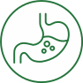

Пищеварение
-
Капельница «Детокс»

-
Активирует процессы детоксикации в печени, работу иммунной системы, желудочно-кишечного тракта и легких.
Укрепляет защитные силы организма и способствует быстрому обезвреживанию и выведению вирусов и бактерий,
пищевых и лекарственных токсинов. Усиливает антиоксидантную систему, увеличивая устойчивость к развитию
заболеваний.
-
Изготовление аутопробиотика
- Аутопробиотик – это пробиотик, созданный специально для Вас на основе
Ваших собственных бактерий. В отличие от других пробиотиков он содержит именно те культуры бактерий,
которые являются основными и незаменимыми для конкретного человека, поскольку они были выделены из его
организма. Это обеспечивает его усвояемость, поскольку зачастую организм не дает приживаться
микроорганизмам из «промышленных» лекарств-пробиотиков и после прекращения курса их эффект может
пропасть.
-
Составление индивидуальной программы питания
- Врач-диетолог, основываясь на данных диагностики состава тела,
анализах, полученных в клинике, и пожеланиях Гостя, составляет меню на каждый день. Включает
компьютерную диагностику состава тела на аппарате «МЕДАСС», три консультации врача-диетолога, разработку
и составление индивидуального меню на 5 дней на время нахождения в клинике. То есть именно по выбранному
и разработанному лично для Гостя меню повара нашего ресторана диетического питания будут готовить.
-
Спектральная фототерапия (СФТ) на проекцию органов
-
Данный метод доставки необходимых микроэлементов к пораженному органу с помощью мультиспектральной
энергии света cочетает принципы фототерапии и рефлексотерапии. Лечебный эффект достигается за счет
насыщения организма определенными микро- и макроэлементами, которые участвуют во всех обменных
процессах, обеспечивая нормальное функционирование организма.
-
Лимфотропное введение гепатопротекторов
- Метод лечения, предполагающий введение лекарственных средств
непосредственно в лимфатическую систему – зону максимального скопления лимфатических сосудов и узлов.
Отличается высокой эффективностью, которая обусловлена наличием связей между органами/тканями и
лимфатической системой. Это обеспечивает адресную доставку лекарственного средства непосредственно к
больному органу.
-
Консультации врачей-специалистов
-
Гастроэнтеролог, проктолог, диетолог.
-
Гастроэнтерологический check-up
-
Данное комплексное обследование рекомендуется при наличии жалоб со стороны пищеварительной системы, при
отягощенной наследственности по заболеваниям ЖКТ (гастрит, язвенная болезнь, ГЭРБ, геморрой, ДЖВП,
панкреатит, холецистит, опухолевые заболевания, другие заболевания тонкого и толстого кишечника), а
также людям в возрасте 40 лет и старше.
-
Фиброгастродуоденоскопия (ФГДС)
- Фиброгастродуоденоскопия (ФГДС, ЭГДС, гастроскопия, эндоскопия
желудка) – это метод визуализации верхних отделов пищеварительной системы – пищевода, желудка, верхнего
отдела двенадцатиперстной кишки. Диагностика осуществляется с помощью эндоскопа – специальной тонкой
трубки, оснащенной видеокамерой, которую вводят пациенту через рот.
-
Фиброколоноскопия (ФКС)
-
Фиброколоноскопия (ФКС, колоноскопия) – это высокоинформативный эндоскопический метод диагностики
состояния толстого кишечника. Диагностика осуществляется с помощью фиброколоноскопа (специальный гибкий,
длинный зонд со встроенным фиброоптическим волокном или видеочипом), который вводят пациенту через
анальное отверстие в просвет кишки. Длина зонда составляет 160 см, что позволяет врачу осмотреть
слизистую толстого кишечника от анального отверстия до слепого отдела кишки.
-
Ректороманоскопия
-
Метод эндоскопического визуального обследования прямой кишки и дистального (нижнего) отдела сигмовидной
кишки. Ректороманоскоп (инструмент, с помощью которого врач осматривает слизистую) вводится через задний
проход на 25 см.
-
ХМС крови на дисбактериоз кишечника
-
Позволяет узнать состояние вашей микробиоты.
-
Исследования кала на дисбактериозгенетическое исследование микробиома кишечника
-
Позволяет узнать состояние вашей микробиоты.
-
Генетическое исследование микробиома кишечника
-
Позволяет узнать состояние вашей микробиоты.
-
Программа «Детокс»
-
Это комплекс лечебно-профилактических мероприятий, направленных на избавление от токсинов. Запускает
природные механизмы самооздоровления и очищения. Также включает в себя диагностику.